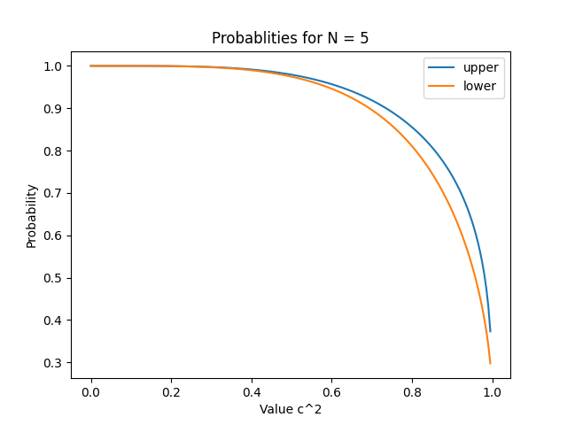

In order to be able to distiguish between $\ket{0}$ and $\ket{\phi}$ we want to minimize the result c. So with the POVM defined we have the following table of probabilities of obtaining a certain result depending on the input
| Input | |||
| \( \ket{0} \) | \( \ket{\phi} \) | ||
| Prob. Output | A | $\expval{E_{A}}{0}$ | $\expval{E_{A}}{\phi}$ |
| B | $\expval{E_{B}}{0}$ | $\expval{E_{B}}{\phi}$ | |
| C | $\expval{E_{C}}{0}$ | $\expval{E_{C}}{\phi}$ | |
Doing the substitutions and taking into account $pA + pB + pC = 1$:
| Input | |||
| \( \ket{0} \) | \( \ket{\phi} \) | ||
| Prob. Output | A | $\braket{0}{1}\braket{1}{0} = 0$ | $\braket{\phi}{1}\braket{1}{\phi}$ |
| B | $\braket{0}{\Phi}\braket{\Phi}{0}$ | $\braket{\phi}{\Phi}\braket{\Phi}{\phi} = 0$ | |
| C | $1 - pA - pB$ | $1 - pA - pB$ | |
If we define $c = \braket{\phi}{0}$ we get the following relation:
\[ \braket{1}{\phi}\braket{\phi}{1} = 1 -c^{2} \]and also (formal demonstration needed):
\[ \braket{0}{\Phi}\braket{\Phi}{0} = 1 -c^{2} \]so finally we get the following results:
| Input | |||
| \( \ket{0} \) | \( \ket{\phi} \) | ||
| Prob. Output | A | $0$ | $1-c^{2}$ |
| B | $1-c^{2}$ | $0$ | |
| C | $c^{2}$ | $c^{2}$ | |
where $c = \braket{\phi}{0}$ and without losing generality we can say it is a Real number so $c \in [0,1]$
Let's analyze the personal case where $\ket{\phi} = \ket{1} => c=0$
| Input | |||
| $\ket{0}$ | $\ket{\phi} = \ket{1}$ | ||
| Prob. Output | A | $0$ | $1$ |
| B | $1$ | $0$ | |
| C | $0$ | $0$ | |
So in that case we can distinguish both states without any doubt.
[[1. 0. 0. 0. 0.] [0. 1. 0. 0. 0.] [0. 0. 1. 0. 0.] [0. 0. 0. 1. 0.] [0. 0. 0. 0. 1.]]Matrix $\sqrt{G}$:
[[1. 0. 0. 0. 0.] [0. 1. 0. 0. 0.] [0. 0. 1. 0. 0.] [0. 0. 0. 1. 0.] [0. 0. 0. 0. 1.]]Bounds for probabilities : $[1.0, 1.0]$
[[1.e+00 1.e-03 1.e-06 1.e-09 1.e-12] [1.e-03 1.e+00 1.e-03 1.e-06 1.e-09] [1.e-06 1.e-03 1.e+00 1.e-03 1.e-06] [1.e-09 1.e-06 1.e-03 1.e+00 1.e-03] [1.e-12 1.e-09 1.e-06 1.e-03 1.e+00]]Matrix $\sqrt{G}$:
[[9.99999875e-01 5.00000000e-04 3.75000008e-07 3.12500005e-10 2.73173053e-13] [5.00000000e-04 9.99999750e-01 4.99999937e-04 3.74999969e-07 3.12500018e-10] [3.75000008e-07 4.99999937e-04 9.99999750e-01 4.99999938e-04 3.75000008e-07] [3.12500022e-10 3.74999969e-07 4.99999938e-04 9.99999750e-01 5.00000000e-04] [2.73375727e-13 3.12500033e-10 3.75000008e-07 5.00000000e-04 9.99999875e-01]]Bounds for probabilities : $[0.9999995999998768, 0.9999996601038843]$
[[1. 0.70710678 0.5 0.35355339 0.25 ]
[0.70710678 1. 0.70710678 0.5 0.35355339]
[0.5 0.70710678 1. 0.70710678 0.5 ]
[0.35355339 0.5 0.70710678 1. 0.70710678]
[0.25 0.35355339 0.5 0.70710678 1. ]]
Matrix $\sqrt{G}$:
[[0.90706652 0.35006952 0.19017153 0.11436726 0.07373319] [0.35006952 0.84970152 0.32996519 0.18303486 0.11436726] [0.19017153 0.32996519 0.84256485 0.32996519 0.19017153] [0.11436726 0.18303486 0.32996519 0.84970152 0.35006952] [0.07373319 0.11436726 0.19017153 0.35006952 0.90706652]]Bounds for probabilities : $[0.759024612861236, 0.8623165655974296]$
[[1. 0.99999 0.99998 0.99997 0.99996]
[0.99999 1. 0.99999 0.99998 0.99997]
[0.99998 0.99999 1. 0.99999 0.99998]
[0.99997 0.99998 0.99999 1. 0.99999]
[0.99996 0.99997 0.99998 0.99999 1. ]]
Matrix $\sqrt{G}$:
[[0.45129219 0.44759358 0.44626956 0.4455936 0.44529223] [0.44759358 0.44997265 0.44692208 0.44597265 0.4455936 ] [0.44626956 0.44692208 0.44967574 0.44692208 0.44626956] [0.4455936 0.44597265 0.44692208 0.44997265 0.44759358] [0.44529223 0.4455936 0.44626956 0.44759358 0.45129219]]Bounds for probabilities : $ [0.20289716998191332, 0.21045502977159405]$
If we make a graphic for $N=5$ of the bounds of the probabilities depending on $c$ we obtain:
